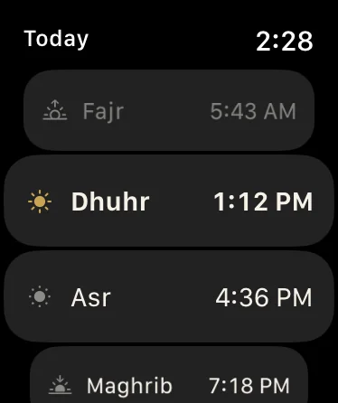
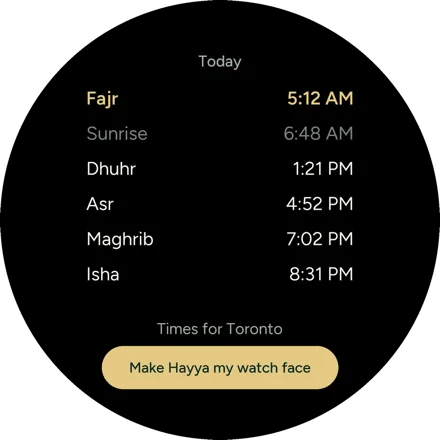
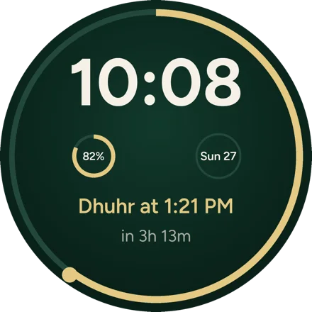

Apple Watch
watchOS 10 or later. It installs with Hayya on your iPhone.

Hayya is a free prayer times app for iPhone and Android. At every prayer time, your phone rings like an incoming call: full screen, with a real ringtone. Answer it and the prayer is logged. Leave it and it calls again.
A 40-second video of Hayya: a prayer call ringing, the duʿā gate, and the day's prayers.
Try it here
This is Hayya's home screen, running on this page with your times. Your browser works them out with the same maths the app uses.
Today's prayer times. Tap a prayer to mark it.
Plays the Classic Ring ringtone, so turn your sound on. Tap a prayer on the screen once to mark it prayed, twice for prayed late.
Your location never leaves this page. City search sends only the name you type to Open-Meteo, a free place-name service, to find it on the map. City names from GeoNames.
How it works
You don't ignore a phone call. Hayya makes salah just as hard to walk past.
Full screen, with its own ringtone. On iOS 26 it rings like a Clock alarm, even when your phone is on silent. On Android it covers the lock screen.
Leave it and it hangs up, then rings again a few minutes later. You can snooze it once. If the time for that prayer runs out, it's logged as missed and your streak starts again.
Pick a reason or write your own. Hayya keeps what you wrote and shows it to you later. Or have it call you back in 20 to 60 minutes instead.
Turn this on and the Fajr alarm keeps ringing until you say the waking-up duʿā aloud. It's the surest way to be properly awake.
Switch any prayer to a notification: one banner, no ringing, no calling back. Add your own alarms too, like Tahajjud or "20 minutes before Fajr".
What's new
Everything below came out since 1 September. Most of it reached phones without a trip to the App Store or Play Store.
العربيةIndonesiaবাংলাاردوTürkçeMelayuفارسیFrançais
Pick yours in Settings.
Choose from 4 recordings: Abdul Basit Abdus Samad, the Grand Mosque in Makkah, the Prophet's Mosque in Madinah, or a single voice recorded close. Fajr plays the Fajr adhan. It keeps playing while you make wudu.
Tap Fajr, Sunrise, Dhuhr, Asr or Maghrib to see the times around it when voluntary prayer is not offered, on today's clock.
A Listen button on every adhkar card plays the words, at any speed from 0.75× to 2×. Surat al-Kahf is on the Friday list too.
New in version 1.3.0
Including an Islamic watch face with Arabic numerals for Wear OS. Your watch takes your city and settings from your phone and works out the times itself, so they stay right when your phone is in another room.
watchOS 10 or later. It installs with Hayya on your iPhone.

Wear OS 3 or later, like Galaxy Watch and Pixel Watch. Install Hayya from the Play Store on your watch.

When a prayer calls, your watch rings too. Snooze it from your wrist. Answer and Decline open Hayya on your phone, where the prayer is logged.

Watch faces with Arabic numerals or Islamic patterns are hard to find. Hayya's comes with Arabic numerals (١٢ ٣ ٦ ٩), an eight-pointed star like the ones in Islamic geometric art, a classic dial, analog or digital, in 12 colours. The next prayer and the time left until it are always on the dial, with two spaces you fill yourself, like battery or the date.
It needs Wear OS 6 or later. On an older watch, you can put the next prayer on any face. Try it here:
Call styles
Each prayer can arrive as a different kind of call, each with its own ringtone made for Hayya. Press play to hear them.

Or use a sound of your own. On iPhone, the alarm sound or any audio file. On Android, any ringtone or alarm sound on your phone.
Adhkār and duʿās
All 39 of them, with the Arabic, how to say it, what it means and where it comes from. In the app, most of them have a Listen button too.
This is the before-sleep list the way the app shows it, with 10 of the 11 already said. Tap the last one to finish the list.
Counted ones, like Subhanallah 33 times, go up by one with each tap.
اللَّهُمَّ صَلِّ عَلَىٰ مُحَمَّدٍ وَعَلَىٰ آلِ مُحَمَّدٍ، كَمَا صَلَّيْتَ عَلَىٰ إِبْرَاهِيمَ وَعَلَىٰ آلِ إِبْرَاهِيمَ، إِنَّكَ حَمِيدٌ مَجِيدٌ. اللَّهُمَّ بَارِكْ عَلَىٰ مُحَمَّدٍ وَعَلَىٰ آلِ مُحَمَّدٍ، كَمَا بَارَكْتَ عَلَىٰ إِبْرَاهِيمَ وَعَلَىٰ آلِ إِبْرَاهِيمَ، إِنَّكَ حَمِيدٌ مَجِيدٌ
Allahumma salli ‘ala Muhammadin wa ‘ala ali Muhammad, kama sallayta ‘ala Ibrahima wa ‘ala ali Ibrahim, innaka Hamidun Majid. Allahumma barik ‘ala Muhammadin wa ‘ala ali Muhammad, kama barakta ‘ala Ibrahima wa ‘ala ali Ibrahim, innaka Hamidun Majid.
O Allah, send prayers upon Muhammad and upon the family of Muhammad, as You sent prayers upon Ibrahim and upon the family of Ibrahim. You are indeed Praiseworthy, Glorious. O Allah, bless Muhammad and the family of Muhammad, as You blessed Ibrahim and the family of Ibrahim. You are indeed Praiseworthy, Glorious.
Bukhārī 3370 · Muslim 406The salawat he ﷺ taught when they asked how
اللَّهُ لَا إِلَٰهَ إِلَّا هُوَ الْحَيُّ الْقَيُّومُ، لَا تَأْخُذُهُ سِنَةٌ وَلَا نَوْمٌ، لَهُ مَا فِي السَّمَاوَاتِ وَمَا فِي الْأَرْضِ، مَنْ ذَا الَّذِي يَشْفَعُ عِنْدَهُ إِلَّا بِإِذْنِهِ، يَعْلَمُ مَا بَيْنَ أَيْدِيهِمْ وَمَا خَلْفَهُمْ، وَلَا يُحِيطُونَ بِشَيْءٍ مِنْ عِلْمِهِ إِلَّا بِمَا شَاءَ، وَسِعَ كُرْسِيُّهُ السَّمَاوَاتِ وَالْأَرْضَ، وَلَا يَئُودُهُ حِفْظُهُمَا، وَهُوَ الْعَلِيُّ الْعَظِيمُ
Allahu la ilaha illa Huwa l-Hayyu l-Qayyum. La ta’khudhuhu sinatun wa la nawm. Lahu ma fi s-samawati wa ma fi l-ard. Man dha lladhi yashfa‘u ‘indahu illa bi-idhnih. Ya‘lamu ma bayna aydihim wa ma khalfahum, wa la yuhituna bi shay’in min ‘ilmihi illa bima sha’. Wasi‘a kursiyyuhu s-samawati wa l-ard, wa la ya’uduhu hifzuhuma, wa Huwa l-‘Aliyyu l-‘Azim.
Allah — there is no god but He, the Ever-Living, the Sustainer of all. Neither drowsiness overtakes Him nor sleep. To Him belongs whatever is in the heavens and whatever is on the earth. Who can intercede with Him except by His permission? He knows what lies before them and what is behind them, and they encompass nothing of His knowledge except what He wills. His Kursī extends over the heavens and the earth, and their preservation does not weary Him. He is the Most High, the Most Great.
Al-Baqarah 2:255 · an-Nasāʾī, ʿAmal al-Yawm 962
قُلْ هُوَ اللَّهُ أَحَدٌ اللَّهُ الصَّمَدُ لَمْ يَلِدْ وَلَمْ يُولَدْ وَلَمْ يَكُنْ لَهُ كُفُوًا أَحَدٌ
Qul Huwa llahu Ahad Allahu s-Samad Lam yalid wa lam yulad Wa lam yakun lahu kufuwan ahad
Say: He is Allah, the One. Allah, the Eternal Refuge. He neither begets nor is born, and there is none comparable to Him.
Qur’an 112 · Abū Dāwūd 5082
قُلْ أَعُوذُ بِرَبِّ الْفَلَقِ مِنْ شَرِّ مَا خَلَقَ وَمِنْ شَرِّ غَاسِقٍ إِذَا وَقَبَ وَمِنْ شَرِّ النَّفَّاثَاتِ فِي الْعُقَدِ وَمِنْ شَرِّ حَاسِدٍ إِذَا حَسَدَ
Qul a‘udhu bi Rabbi l-falaq Min sharri ma khalaq Wa min sharri ghasiqin idha waqab Wa min sharri n-naffathati fi l-‘uqad Wa min sharri hasidin idha hasad
Say: I seek refuge in the Lord of the daybreak — from the evil of what He created, from the evil of darkness when it settles, from the evil of those who blow on knots, and from the evil of an envier when he envies.
Qur’an 113 · Abū Dāwūd 5082
قُلْ أَعُوذُ بِرَبِّ النَّاسِ مَلِكِ النَّاسِ إِلَٰهِ النَّاسِ مِنْ شَرِّ الْوَسْوَاسِ الْخَنَّاسِ الَّذِي يُوَسْوِسُ فِي صُدُورِ النَّاسِ مِنَ الْجِنَّةِ وَالنَّاسِ
Qul a‘udhu bi Rabbi n-nas Maliki n-nas Ilahi n-nas Min sharri l-waswasi l-khannas Alladhi yuwaswisu fi suduri n-nas Mina l-jinnati wa n-nas
Say: I seek refuge in the Lord of mankind, the Sovereign of mankind, the God of mankind — from the evil of the retreating whisperer who whispers in the breasts of mankind, from among the jinn and mankind.
Qur’an 114 · Abū Dāwūd 5082
اللَّهُمَّ أَنْتَ رَبِّي لَا إِلَٰهَ إِلَّا أَنْتَ، خَلَقْتَنِي وَأَنَا عَبْدُكَ، وَأَنَا عَلَىٰ عَهْدِكَ وَوَعْدِكَ مَا اسْتَطَعْتُ، أَعُوذُ بِكَ مِنْ شَرِّ مَا صَنَعْتُ، أَبُوءُ لَكَ بِنِعْمَتِكَ عَلَيَّ، وَأَبُوءُ بِذَنْبِي فَاغْفِرْ لِي فَإِنَّهُ لَا يَغْفِرُ الذُّنُوبَ إِلَّا أَنْتَ
Allahumma anta Rabbi la ilaha illa anta, khalaqtani wa ana ‘abduk, wa ana ‘ala ‘ahdika wa wa‘dika ma stata‘t. A‘udhu bika min sharri ma sana‘t, abu’u laka bi ni‘matika ‘alayya, wa abu’u bi dhanbi faghfir li fa innahu la yaghfiru dh-dhunuba illa ant.
O Allah, You are my Lord; there is no god but You. You created me and I am Your servant, and I hold to Your covenant and Your promise as best I can. I seek refuge in You from the evil of what I have done. I acknowledge Your favour upon me and I acknowledge my sin, so forgive me — for none forgives sins but You.
Bukhārī 6306The best way of asking forgiveness
أَصْبَحْنَا وَأَصْبَحَ الْمُلْكُ لِلَّهِ، وَالْحَمْدُ لِلَّهِ، لَا إِلَٰهَ إِلَّا اللَّهُ وَحْدَهُ لَا شَرِيكَ لَهُ، لَهُ الْمُلْكُ وَلَهُ الْحَمْدُ وَهُوَ عَلَىٰ كُلِّ شَيْءٍ قَدِيرٌ. رَبِّ أَسْأَلُكَ خَيْرَ مَا فِي هَٰذَا الْيَوْمِ وَخَيْرَ مَا بَعْدَهُ، وَأَعُوذُ بِكَ مِنْ شَرِّ مَا فِي هَٰذَا الْيَوْمِ وَشَرِّ مَا بَعْدَهُ
Asbahna wa asbaha l-mulku lillah, wa l-hamdu lillah, la ilaha illa llahu wahdahu la sharika lah, lahu l-mulku wa lahu l-hamdu wa huwa ‘ala kulli shay’in qadir. Rabbi as’aluka khayra ma fi hadha l-yawmi wa khayra ma ba‘dah, wa a‘udhu bika min sharri ma fi hadha l-yawmi wa sharri ma ba‘dah.
We have entered the morning and the dominion belongs to Allah. All praise is for Allah. There is no god but Allah alone, with no partner; His is the dominion and His is the praise, and He is over all things capable. My Lord, I ask You for the good of this day and the good that comes after it, and I seek refuge in You from the evil of this day and the evil that comes after it.
Muslim 2723
اللَّهُمَّ بِكَ أَصْبَحْنَا، وَبِكَ أَمْسَيْنَا، وَبِكَ نَحْيَا، وَبِكَ نَمُوتُ، وَإِلَيْكَ النُّشُورُ
Allahumma bika asbahna, wa bika amsayna, wa bika nahya, wa bika namut, wa ilayka n-nushur.
O Allah, by You we enter the morning and by You we enter the evening; by You we live and by You we die, and to You is the resurrection.
Abū Dāwūd 5068 · at-Tirmidhī 3391
بِسْمِ اللَّهِ الَّذِي لَا يَضُرُّ مَعَ اسْمِهِ شَيْءٌ فِي الْأَرْضِ وَلَا فِي السَّمَاءِ وَهُوَ السَّمِيعُ الْعَلِيمُ
Bismillahi lladhi la yadurru ma‘a smihi shay’un fi l-ardi wa la fi s-sama’, wa Huwa s-Sami‘u l-‘Alim.
In the name of Allah, with whose name nothing in the earth or in the heaven can cause harm, and He is the All-Hearing, the All-Knowing.
Abū Dāwūd 5088 · at-Tirmidhī 3388
رَضِيتُ بِاللَّهِ رَبًّا، وَبِالْإِسْلَامِ دِينًا، وَبِمُحَمَّدٍ صَلَّى اللَّهُ عَلَيْهِ وَسَلَّمَ نَبِيًّا
Raditu billahi Rabba, wa bi l-Islami dina, wa bi Muhammadin salla llahu ‘alayhi wa sallama Nabiyya.
I am pleased with Allah as my Lord, with Islam as my religion, and with Muhammad (peace and blessings be upon him) as my Prophet.
Abū Dāwūd 5072
سُبْحَانَ اللَّهِ وَبِحَمْدِهِ، عَدَدَ خَلْقِهِ، وَرِضَا نَفْسِهِ، وَزِنَةَ عَرْشِهِ، وَمِدَادَ كَلِمَاتِهِ
Subhana llahi wa bi hamdih, ‘adada khalqih, wa rida nafsih, wa zinata ‘arshih, wa midada kalimatih.
Glory be to Allah and praise be to Him — as many as the number of His creation, as much as pleases Him, as much as the weight of His Throne, and as much as the ink of His words.
Muslim 2726Three times outweighs a whole morning of dhikr
يَا مُقَلِّبَ الْقُلُوبِ، ثَبِّتْ قَلْبِي عَلَىٰ دِينِكَ
Ya Muqalliba l-qulub, thabbit qalbi ‘ala dinik.
O Turner of hearts, make my heart firm upon Your religion.
at-Tirmidhī 2140He ﷺ said it often; the hearts are between two fingers of the Merciful
اللَّهُمَّ صَلِّ وَسَلِّمْ عَلَىٰ نَبِيِّنَا مُحَمَّدٍ
Allahumma salli wa sallim ‘ala Nabiyyina Muhammad.
O Allah, send prayers and peace upon our Prophet Muhammad.
aṭ-Ṭabarānī, al-AwsaṭGraded ḥasan; ten in the morning and ten in the evening, and my intercession reaches him
أَمْسَيْنَا وَأَمْسَى الْمُلْكُ لِلَّهِ، وَالْحَمْدُ لِلَّهِ، لَا إِلَٰهَ إِلَّا اللَّهُ وَحْدَهُ لَا شَرِيكَ لَهُ، لَهُ الْمُلْكُ وَلَهُ الْحَمْدُ وَهُوَ عَلَىٰ كُلِّ شَيْءٍ قَدِيرٌ. رَبِّ أَسْأَلُكَ خَيْرَ مَا فِي هَٰذِهِ اللَّيْلَةِ وَخَيْرَ مَا بَعْدَهَا، وَأَعُوذُ بِكَ مِنْ شَرِّ مَا فِي هَٰذِهِ اللَّيْلَةِ وَشَرِّ مَا بَعْدَهَا
Amsayna wa amsa l-mulku lillah, wa l-hamdu lillah, la ilaha illa llahu wahdahu la sharika lah, lahu l-mulku wa lahu l-hamdu wa huwa ‘ala kulli shay’in qadir. Rabbi as’aluka khayra ma fi hadhihi l-laylati wa khayra ma ba‘daha, wa a‘udhu bika min sharri ma fi hadhihi l-laylati wa sharri ma ba‘daha.
We have entered the evening and the dominion belongs to Allah. All praise is for Allah. There is no god but Allah alone, with no partner; His is the dominion and His is the praise, and He is over all things capable. My Lord, I ask You for the good of this night and the good that comes after it, and I seek refuge in You from the evil of this night and the evil that comes after it.
Muslim 2723
اللَّهُمَّ بِكَ أَمْسَيْنَا، وَبِكَ أَصْبَحْنَا، وَبِكَ نَحْيَا، وَبِكَ نَمُوتُ، وَإِلَيْكَ الْمَصِيرُ
Allahumma bika amsayna, wa bika asbahna, wa bika nahya, wa bika namut, wa ilayka l-masir.
O Allah, by You we enter the evening and by You we enter the morning; by You we live and by You we die, and to You is the final return.
Abū Dāwūd 5068 · at-Tirmidhī 3391
أَعُوذُ بِكَلِمَاتِ اللَّهِ التَّامَّاتِ مِنْ شَرِّ مَا خَلَقَ
A‘udhu bi kalimati llahi t-tammati min sharri ma khalaq.
I seek refuge in the perfect words of Allah from the evil of what He has created.
Muslim 2708bSaid in the evening, nothing will harm you that night
آمَنَ الرَّسُولُ بِمَا أُنْزِلَ إِلَيْهِ مِنْ رَبِّهِ وَالْمُؤْمِنُونَ، كُلٌّ آمَنَ بِاللَّهِ وَمَلَائِكَتِهِ وَكُتُبِهِ وَرُسُلِهِ، لَا نُفَرِّقُ بَيْنَ أَحَدٍ مِنْ رُسُلِهِ، وَقَالُوا سَمِعْنَا وَأَطَعْنَا، غُفْرَانَكَ رَبَّنَا وَإِلَيْكَ الْمَصِيرُ لَا يُكَلِّفُ اللَّهُ نَفْسًا إِلَّا وُسْعَهَا، لَهَا مَا كَسَبَتْ وَعَلَيْهَا مَا اكْتَسَبَتْ، رَبَّنَا لَا تُؤَاخِذْنَا إِنْ نَسِينَا أَوْ أَخْطَأْنَا، رَبَّنَا وَلَا تَحْمِلْ عَلَيْنَا إِصْرًا كَمَا حَمَلْتَهُ عَلَى الَّذِينَ مِنْ قَبْلِنَا، رَبَّنَا وَلَا تُحَمِّلْنَا مَا لَا طَاقَةَ لَنَا بِهِ، وَاعْفُ عَنَّا وَاغْفِرْ لَنَا وَارْحَمْنَا، أَنْتَ مَوْلَانَا فَانْصُرْنَا عَلَى الْقَوْمِ الْكَافِرِينَ
Amana r-Rasulu bima unzila ilayhi min Rabbihi wa l-mu’minun. Kullun amana billahi wa mala’ikatihi wa kutubihi wa rusulih. La nufarriqu bayna ahadin min rusulih. Wa qalu sami‘na wa ata‘na, ghufranaka Rabbana wa ilayka l-masir. La yukallifu llahu nafsan illa wus‘aha. Laha ma kasabat wa ‘alayha ma ktasabat. Rabbana la tu’akhidhna in nasina aw akhta’na. Rabbana wa la tahmil ‘alayna isran kama hamaltahu ‘ala lladhina min qablina. Rabbana wa la tuhammilna ma la taqata lana bih. Wa‘fu ‘anna, waghfir lana, warhamna. Anta Mawlana fansurna ‘ala l-qawmi l-kafirin.
The Messenger believes in what was revealed to him from his Lord, and so do the believers. Each believes in Allah, His angels, His books and His messengers — we make no distinction between any of His messengers. And they say: we hear and we obey; grant us Your forgiveness, our Lord, and to You is the return. Allah burdens no soul beyond its capacity. It has what it has earned, and against it what it has brought upon itself. Our Lord, do not take us to task if we forget or fall into error. Our Lord, do not lay upon us a burden like the one You laid upon those before us. Our Lord, do not burden us with more than we can bear. Pardon us, forgive us, and have mercy on us. You are our Protector, so give us victory over the disbelieving people.
Al-Baqarah 2:285-286 · Bukhārī 5009Whoever reads them at night, they suffice him
سُبْحَانَ اللَّهِ
Subhanallah.
Glory be to Allah.
Bukhārī 3705The tasbih of Fatima, at bedtime
الْحَمْدُ لِلَّهِ
Alhamdulillah.
All praise is for Allah.
Bukhārī 3705
اللَّهُ أَكْبَرُ
Allahu akbar.
Allah is the Greatest.
Bukhārī 3705Better for the two of you than a servant
اللَّهُمَّ قِنِي عَذَابَكَ يَوْمَ تَبْعَثُ عِبَادَكَ
Allahumma qini ‘adhabaka yawma tab‘athu ‘ibadak.
O Allah, protect me from Your punishment on the Day You raise Your servants.
Abū Dāwūd 5045Said with your hand under your cheek
بِاسْمِكَ اللَّهُمَّ أَمُوتُ وَأَحْيَا
Bismika llahumma amutu wa ahya.
In Your name, O Allah, I die and I live.
Bukhārī 6324Said as you lie down
اللَّهُمَّ أَسْلَمْتُ نَفْسِي إِلَيْكَ، وَفَوَّضْتُ أَمْرِي إِلَيْكَ، وَأَلْجَأْتُ ظَهْرِي إِلَيْكَ، رَغْبَةً وَرَهْبَةً إِلَيْكَ، لَا مَلْجَأَ وَلَا مَنْجَا مِنْكَ إِلَّا إِلَيْكَ، آمَنْتُ بِكِتَابِكَ الَّذِي أَنْزَلْتَ، وَبِنَبِيِّكَ الَّذِي أَرْسَلْتَ
Allahumma aslamtu nafsi ilayk, wa fawwadtu amri ilayk, wa alja’tu zahri ilayk, raghbatan wa rahbatan ilayk. La malja’a wa la manja minka illa ilayk. Amantu bi kitabika lladhi anzalt, wa bi nabiyyika lladhi arsalt.
O Allah, I submit myself to You, entrust my affair to You, and turn my back to You in hope of You and in fear of You. There is no refuge and no escape from You except to You. I believe in Your Book which You revealed and in Your Prophet whom You sent.
Bukhārī 247 · Muslim 2710Let it be the last thing you say, and you die upon the fitrah
أَسْتَغْفِرُ اللَّهَ
Astaghfirullah.
I seek the forgiveness of Allah.
Muslim 591Said three times on finishing the prayer
اللَّهُمَّ أَنْتَ السَّلَامُ، وَمِنْكَ السَّلَامُ، تَبَارَكْتَ يَا ذَا الْجَلَالِ وَالْإِكْرَامِ
Allahumma anta s-Salamu wa minka s-salam, tabarakta ya Dha l-Jalali wa l-Ikram.
O Allah, You are Peace and from You comes peace. Blessed are You, Owner of Majesty and Honour.
Muslim 591
لَا إِلَٰهَ إِلَّا اللَّهُ وَحْدَهُ لَا شَرِيكَ لَهُ، لَهُ الْمُلْكُ وَلَهُ الْحَمْدُ وَهُوَ عَلَىٰ كُلِّ شَيْءٍ قَدِيرٌ، اللَّهُمَّ لَا مَانِعَ لِمَا أَعْطَيْتَ، وَلَا مُعْطِيَ لِمَا مَنَعْتَ، وَلَا يَنْفَعُ ذَا الْجَدِّ مِنْكَ الْجَدُّ
La ilaha illa llahu wahdahu la sharika lah, lahu l-mulku wa lahu l-hamdu wa huwa ‘ala kulli shay’in qadir. Allahumma la mani‘a lima a‘tayt, wa la mu‘tiya lima mana‘t, wa la yanfa‘u dha l-jaddi minka l-jadd.
There is no god but Allah alone, with no partner. His is the dominion and His is the praise, and He is over all things capable. O Allah, none can withhold what You give, and none can give what You withhold, and no fortune can avail its owner against You.
Bukhārī 844 · Muslim 593
لَا إِلَٰهَ إِلَّا اللَّهُ وَحْدَهُ لَا شَرِيكَ لَهُ، لَهُ الْمُلْكُ وَلَهُ الْحَمْدُ وَهُوَ عَلَىٰ كُلِّ شَيْءٍ قَدِيرٌ، لَا حَوْلَ وَلَا قُوَّةَ إِلَّا بِاللَّهِ، لَا إِلَٰهَ إِلَّا اللَّهُ، وَلَا نَعْبُدُ إِلَّا إِيَّاهُ، لَهُ النِّعْمَةُ وَلَهُ الْفَضْلُ وَلَهُ الثَّنَاءُ الْحَسَنُ، لَا إِلَٰهَ إِلَّا اللَّهُ مُخْلِصِينَ لَهُ الدِّينَ وَلَوْ كَرِهَ الْكَافِرُونَ
La ilaha illa llahu wahdahu la sharika lah, lahu l-mulku wa lahu l-hamdu wa huwa ‘ala kulli shay’in qadir. La hawla wa la quwwata illa billah. La ilaha illa llah, wa la na‘budu illa iyyah. Lahu n-ni‘matu wa lahu l-fadlu wa lahu th-thana’u l-hasan. La ilaha illa llahu mukhlisina lahu d-dina wa law kariha l-kafirun.
There is no god but Allah alone, with no partner. His is the dominion and His is the praise, and He is over all things capable. There is no might and no power except with Allah. There is no god but Allah, and we worship none but Him. His is the favour, His is the bounty, and His is the excellent praise. There is no god but Allah — we are sincere to Him in religion, however much the disbelievers dislike it.
Muslim 594
اللَّهُمَّ أَعِنِّي عَلَىٰ ذِكْرِكَ وَشُكْرِكَ وَحُسْنِ عِبَادَتِكَ
Allahumma a‘inni ‘ala dhikrika wa shukrika wa husni ‘ibadatik.
O Allah, help me to remember You, to thank You, and to worship You well.
Abū Dāwūd 1522The Prophet ﷺ told Muʿādh never to leave this after any prayer
اللَّهُمَّ إِنِّي أَعُوذُ بِكَ مِنَ الْبُخْلِ، وَأَعُوذُ بِكَ مِنَ الْجُبْنِ، وَأَعُوذُ بِكَ مِنْ أَنْ أُرَدَّ إِلَىٰ أَرْذَلِ الْعُمُرِ، وَأَعُوذُ بِكَ مِنْ فِتْنَةِ الدُّنْيَا، وَأَعُوذُ بِكَ مِنْ عَذَابِ الْقَبْرِ
Allahumma inni a‘udhu bika mina l-bukhl, wa a‘udhu bika mina l-jubn, wa a‘udhu bika min an uradda ila ardhali l-‘umur, wa a‘udhu bika min fitnati d-dunya, wa a‘udhu bika min ‘adhabi l-qabr.
O Allah, I seek refuge in You from miserliness, and I seek refuge in You from cowardice, and I seek refuge in You from being returned to the feeblest age, and I seek refuge in You from the trials of this world, and I seek refuge in You from the punishment of the grave.
Bukhārī 2822
لَا إِلَٰهَ إِلَّا اللَّهُ وَحْدَهُ لَا شَرِيكَ لَهُ، لَهُ الْمُلْكُ وَلَهُ الْحَمْدُ وَهُوَ عَلَىٰ كُلِّ شَيْءٍ قَدِيرٌ
La ilaha illa llahu wahdahu la sharika lah, lahu l-mulku wa lahu l-hamdu wa huwa ‘ala kulli shay’in qadir.
There is no god but Allah alone, with no partner. His is the dominion and His is the praise, and He is over all things capable.
Muslim 597The hundredth, and his sins are forgiven
لَا إِلَٰهَ إِلَّا اللَّهُ وَحْدَهُ لَا شَرِيكَ لَهُ، لَهُ الْمُلْكُ وَلَهُ الْحَمْدُ، يُحْيِي وَيُمِيتُ، وَهُوَ عَلَىٰ كُلِّ شَيْءٍ قَدِيرٌ
La ilaha illa llahu wahdahu la sharika lah, lahu l-mulku wa lahu l-hamd, yuhyi wa yumit, wa huwa ‘ala kulli shay’in qadir.
There is no god but Allah alone, with no partner. His is the dominion and His is the praise. He gives life and causes death, and He is over all things capable.
Aḥmad 17990
اللَّهُمَّ أَجِرْنِي مِنَ النَّارِ
Allahumma ajirni mina n-nar.
O Allah, protect me from the Fire.
Abū Dāwūd 5079After Fajr and Maghrib, before speaking
اللَّهُمَّ إِنِّي أَسْأَلُكَ عِلْمًا نَافِعًا، وَرِزْقًا طَيِّبًا، وَعَمَلًا مُتَقَبَّلًا
Allahumma inni as’aluka ‘ilman nafi‘a, wa rizqan tayyiba, wa ‘amalan mutaqabbala.
O Allah, I ask You for beneficial knowledge, wholesome provision, and deeds that are accepted.
Ibn Mājah 925Said after Fajr
بِسْمِ اللهِ، تَوَكَّلْتُ عَلَى اللهِ، وَلَا حَوْلَ وَلَا قُوَّةَ إِلَّا بِاللهِ
Bismillah, tawakkaltu ‘alallah, wa la hawla wa la quwwata illa billah.
In the name of Allah. I place my trust in Allah, and there is no might nor power except with Allah.
Abū Dāwūd 5095, at-Tirmidhī 3426Said as you step out of the door
اللهُ أَكْبَرُ، اللهُ أَكْبَرُ، اللهُ أَكْبَرُ سُبْحَانَ الَّذِي سَخَّرَ لَنَا هَذَا وَمَا كُنَّا لَهُ مُقْرِنِينَ، وَإِنَّا إِلَى رَبِّنَا لَمُنْقَلِبُونَ اللَّهُمَّ إِنَّا نَسْأَلُكَ فِي سَفَرِنَا هَذَا الْبِرَّ وَالتَّقْوَى، وَمِنَ الْعَمَلِ مَا تَرْضَى اللَّهُمَّ هَوِّنْ عَلَيْنَا سَفَرَنَا هَذَا، وَاطْوِ عَنَّا بُعْدَهُ اللَّهُمَّ أَنْتَ الصَّاحِبُ فِي السَّفَرِ، وَالْخَلِيفَةُ فِي الْأَهْلِ اللَّهُمَّ إِنِّي أَعُوذُ بِكَ مِنْ وَعْثَاءِ السَّفَرِ، وَكَآبَةِ الْمَنْظَرِ، وَسُوءِ الْمُنْقَلَبِ فِي الْمَالِ وَالْأَهْلِ
Allahu akbar, Allahu akbar, Allahu akbar. Subhanalladhi sakhkhara lana hadha wa ma kunna lahu muqrinin, wa inna ila rabbina lamunqalibun. Allahumma inna nas’aluka fi safarina hadha al-birra wat-taqwa, wa minal-‘amali ma tarda. Allahumma hawwin ‘alayna safarana hadha, watwi ‘anna bu‘dah. Allahumma antas-sahibu fis-safar, wal-khalifatu fil-ahl. Allahumma inni a‘udhu bika min wa‘tha’is-safar, wa ka’abatil-manzar, wa su’il-munqalabi fil-mali wal-ahl.
Allah is the greatest, Allah is the greatest, Allah is the greatest. Glory be to Him who has placed this at our service, for we could never have managed it ourselves — and to our Lord we are surely returning. O Allah, we ask You on this journey of ours for righteousness and piety, and for deeds that please You. O Allah, make this journey easy for us and fold up its distance. O Allah, You are the Companion on the journey and the Guardian of the family left behind. O Allah, I seek refuge in You from the hardship of the journey, from a grim sight, and from an ill return in wealth and family.
Muslim 1342Said once seated, as you set off
اللَّهُمَّ رَبَّ هَذِهِ الدَّعْوَةِ التَّامَّةِ، وَالصَّلَاةِ الْقَائِمَةِ، آتِ مُحَمَّدًا الْوَسِيلَةَ وَالْفَضِيلَةَ، وَابْعَثْهُ مَقَامًا مَحْمُودًا الَّذِي وَعَدْتَهُ
Allahumma rabba hadhihid-da‘watit-tammah, was-salatil-qa’imah, ati Muhammadanil-wasilata wal-fadilah, wab‘athhu maqaman mahmudanil-ladhi wa‘adtah.
O Allah, Lord of this perfect call and the prayer about to be established, grant Muhammad the Wasilah and the virtue, and raise him to the praised station You promised him.
Bukhārī 614
أَعُوذُ بِاللَّهِ مِنَ الشَّيْطَانِ الرَّجِيمِ
Aʿudhu billahi minash-shaytanir-rajim
I seek refuge with Allah from Satan, the accursed
Qur’an 16:98
الْحَمْدُ لِلَّهِ الَّذِي أَحْيَانَا بَعْدَ مَا أَمَاتَنَا وَإِلَيْهِ النُّشُورُ
Alhamdu lillahil-ladhi ahyana baʿda ma amatana wa ilayhin-nushur
Praise is to Allah who gave us life after He caused us to die, and to Him is the resurrection
Bukhārī 6312
الْحَمْدُ لِلَّهِ الَّذِي عَافَانِي فِي جَسَدِي وَرَدَّ عَلَيَّ رُوحِي وَأَذِنَ لِي بِذِكْرِهِ
Alhamdu lillahil-ladhi ʿafani fi jasadi wa radda ʿalayya ruhi wa adhina li bi dhikrih
Praise is to Allah who restored well-being to my body, returned my soul to me, and granted me permission to remember Him
at-Tirmidhī 3401Graded ḥasan
New in version 1.3.0
The flame burns brighter the more of your last 7 days you prayed on time and said your adhkār. Let the days slip and the glass cracks, until one prayer starts it back. It sits on your Home screen and works as a home-screen widget.
See every state of the lanternHayya is for the person who already wants to pray on time and hasn't yet found the thing that makes it happen. If that isn't you, this probably isn't your app.
So it doesn't let much slide. It rings like a call, and calls back until the time for the prayer is over. Snooze works once. Declining takes more than a tap: you write down why, in your own words, and Hayya keeps what you wrote and shows it to you later. A prayer you let pass in silence costs your streak as much as one you turned down.
"Indeed, prayer has been decreed upon the believers at specified times." Qur'an 4:103
That small weight is the point. It isn't there to shame you. Hayya has no one to report you to, nothing to sell you, and no way to tell anyone what you wrote. It's there so that the moment you decide to skip a prayer is a moment you notice.
If the calling is more than you want, turn it down to a quiet notification and keep everything else. The app would rather you use it gently than not at all.
Nobody prays perfectly. The streak will break, and Hayya will keep calling anyway, because the next prayer is the one that matters.
More of the app


Compare
They're all good apps that tell you the prayer times. The difference is what happens when the time comes, what you pay, and what's done with your data.
| What's compared | Hayya | Muslim Pro | Athan by IslamicFinder | Pillars |
|---|---|---|---|---|
| What it costs | Free. No in-app purchases. | Free with ads. Paid subscriptions remove them, listed at $3.99 to $13.99 a month or $29.99 to $49.99 a year. | Free with ads. Premium is $1.99 a month or $11.99 a year, or $3.99 to remove ads. | Free. Premium is $11.99 a month, or $49.99 to $59.99 a year. |
| Ads | None | Yes, in the free version | Yes, in the free version | None |
| Data used to track you from the App Store privacy label | None | Location and identifiers | Contact info | None |
| How each prayer reaches you | Rings like a phone call, full screen, and calls again until you answer or the prayer's time ends | Adhan notifications and adhan alarms | Azan notifications and an azan alarm | Prayer notifications |
| Adhkar | Reminders for morning, evening and before-sleep adhkar, and after each prayer. Each list is a checklist you tick card by card. | Duas for daily moments and a tasbih counter | Dua and athkar with a reminder, a tasbih counter, and daily goals | Not mentioned in its listing |
| Apple Watch | Yes, free | Yes | No Apple Watch app listed | Yes, with Premium |
| Wear OS | Yes, free. An app, a tile, and prayer calls on your wrist. | No Wear OS app on Google Play | No Wear OS app on Google Play | No Wear OS app on Google Play |
| A watch face of its own | Yes. An Islamic watch face for Wear OS 6 or later, with Arabic numerals or an eight-pointed star, in 12 colours. | None on Google Play | None on Google Play | None on Google Play |
| Works on | iPhone, Android, Apple Watch, Wear OS | iPhone, Android, Apple Watch | iPhone, Android | iPhone, Android, Apple Watch |
When another app may suit you better. Hayya does one job: getting you to pray on time. It has no Quran reader and no mosque finder. If you want those in the same app as your prayer times, Muslim Pro and Athan both include the Quran, and Athan has a mosque finder.
Apple doesn't let apps make their own watch faces, so on Apple Watch every prayer app, Hayya included, puts the next prayer on Apple's faces instead.
Checked on 1 October 2026 from each app's US listing on the App Store (Muslim Pro, Athan, Pillars) and Google Play. Prices are in US dollars and change by country. The names belong to their owners, and Hayya isn't connected with any of these apps.
Privacy
Hayya has no servers that receive your data, and no account to attach it to.
Open the app and start. No sign-up, no email, no profile.
Your location, settings, streak and written reasons stay on your phone. With a watch, your phone sends your city and settings straight to it.
Nothing tracks what you do in the app, and there's nothing to sell you.
Uninstalling Hayya removes everything it stored on your phone.
The short answers. There are more on the support page.
Hayya is a free Muslim prayer times app for iPhone, Android, Apple Watch and Wear OS. It works out the five daily prayer times (Fajr, Dhuhr, Asr, Maghrib and Isha) for where you are, and at each one your phone rings like an incoming call until you answer. People use it as a salah, salat or namaz alarm that's hard to sleep through.
It also has morning, evening and before-sleep adhkār with a checklist, 39 duʿās with the Arabic, transliteration and meaning, the full adhan, a qibla compass, an Islamic calendar, and widgets. It has no ads, no account and no tracking, and it's in 9 languages.
Most prayer time apps play the adhan as a notification you can swipe away. Hayya rings like a phone call, full screen, and calls again a few minutes later until you answer or the time for that prayer ends. Answering logs the prayer. Declining asks you why. Missing one breaks your streak.
If you'd rather not be rung, you can switch any prayer to a quiet notification instead.
Hayya is free with no ads and no in-app purchases, and its App Store privacy label lists no data used to track you. Muslim Pro and Athan are free with ads and sell paid plans; Pillars has no ads and sells a Premium plan, which is what unlocks its Apple Watch app. The biggest difference is the alert: the others notify you with the adhan, while Hayya rings like a phone call and calls again until you answer. Hayya has no Quran reader or mosque finder, which Muslim Pro and Athan do. See the full comparison.
12 of them: Muslim World League, ISNA (North America), Umm al-Qura (Makkah), Egyptian General Authority, University of Karachi, Dubai, Kuwait, Qatar, Singapore, Turkey (Diyanet), Tehran and the Moonsighting Committee. Asr can be standard (Shafiʿi, Maliki, Hanbali) or Hanafi. Hayya picks the usual method for your country, and you can change it.
Yes. It's free to download, with no in-app purchases, no subscription and no ads.
An iPhone on iOS 16.4 or later, or an Android phone on Android 8 or later.
For the watch apps: an Apple Watch on watchOS 10 or later, or a Wear OS watch on Wear OS 3 or later. The Hayya watch face needs Wear OS 6 or later.
Yes, for Apple Watch and for Wear OS watches like the Galaxy Watch and Pixel Watch. Both show today's times and count down to the next prayer on your watch face. On Wear OS the call shows on your watch too: you can snooze it there, and Answer or Decline opens Hayya on your phone. See the watch screens.
Yes. Hayya's Wear OS watch face comes in 5 styles: Arabic numerals (Eastern Arabic digits), an eight-pointed star, classic, analog and digital, each in 12 colours. The next prayer and a countdown to it are always on the dial. It needs Wear OS 6 or later, on watches like the Galaxy Watch and Pixel Watch. Try the styles and colours.
Yes. Turn on daily adhkar reminders in Settings for morning, evening and before sleep, at the times you choose, and after-prayer reminders for the adhkar after each salah. Each list is a checklist: tap a card when you've said it, or tap to count for dhikr said 33 times. Finish the list and confetti falls. Try the checklist.
English, Arabic, Indonesian, Bengali, Urdu, Turkish, Malay, Persian and French. Pick yours in Settings.
No. Prayer times are worked out on your phone from your coordinates, so everything works offline. You only need a connection to look up a city by name, or to stream Surat al-Kahf.
Prayer times depend on where the sun is, which depends on where you are. Hayya takes one reading and works out the times on your phone. The coordinates are never sent anywhere. You can skip the permission and type your city instead.
That's what it's built for. Alarms are exact and are set again after a restart. On Android, Hayya walks you through the two system settings that stop your phone delaying alarms: "Alarms & reminders" access and a battery-optimization exemption.
Yes. In Alarms, under the call theme, press Preview, or try a call as soon as you pick a theme. It rings the full call, exactly as it will at prayer time, and doesn't touch your log or streak. You can also try it on this page.
No. In Alarms, then How prayers arrive, switch to Notification only. Every prayer then comes as one quiet banner you can tap when you're ready: no ringing, no calling back, and nothing logged as missed unless you say so.
Yes. Turn on the period pause in Settings. There are no prayer calls or reminders while it's on, and your streak stays as it is.
Yes. Alongside the five prayers you can add your own, at a clock time or tied to a prayer, like "20 minutes before Fajr" or "45 minutes after Maghrib". They can repeat daily, on chosen days, or ring once. Answering one never touches your prayer log.
If a prayer's time ends without an answer, it's logged as missed and your streak starts again. If you did pray and forgot to log it, tap the prayer: once for prayed, twice for prayed late.

Free, private and offline. Five calls a day worth answering.
iPhone: iOS 16.4 or later. Android: Android 8 or later.
More apps
A small family of free, private tools for everyday Muslim life. No accounts, no ads, no tracking. Take whatever helps.
Section-by-section memorization guides for Juz 29 and 30, with checked Arabic and translation, key words, memory hooks, a recitation guide, and drills to test yourself.
learn-quran.app WebA daily reminder, a check-in streak, a library of practical tactics, and a full-screen page to open the moment an urge hits.
lower-your-gaze.vercel.app DiscordA Discord bot that posts a hadith and one of Allah's 99 names to your server every day, with slash commands to pull one whenever you want.
Add it to your server Chrome extensionReminds you of the duʿā for entering the marketplace when you open Amazon, eBay, or any shop you add yourself.
Get the extensionThree decks of quizzes, flashcards and fill-in-the-blanks, free to copy into your own account and learn at your own pace.
mugup.app